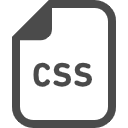
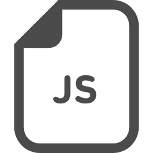

About Me
ポートフォリオサイトをご覧いただきありがとうございます。Webデザイナーの萩原 隼樹(はぎわら じゅんき)です。Web製作を通じて地域のお客様の想いを届けるお手伝いをしております。「お客様の期待を超え感動していただく」を信条に責任を持って仕事に取り組みます。
経歴
| 1987年 | 北海道江別市の農家にて出生 |
| 2005年 | 北海道札幌東高等学校卒業 |
| 2010年 |
米国テキサス大学経営学部ファイナンス学科卒業 (成績優秀者奨学金獲得) |
| 2011年〜 | 日系大手外食会社にて食材受発注データ管理改善に従事 |
| 2014年〜 | 日系大手ITコンサルティング会社にて消費財メーカー向け業務システム導入支援に従事 |
| 2016年〜 | 外資系大手eコマース会社にて商品在庫管理改善に従事 |
| 2018年〜 |
北海道に戻り実家農業に従事 出荷先直売所にてECサイト立上げを担当 |
| 2020年〜 | 屋号を「ビバスゲート」とし、北海道を拠点にWebデザイナーとして活動中 |
強み
自発的な提案
お客様が作りたいサイトとその先に求める成果をヒアリングし、目的に見合うものを作成するために自ら改善点を提案できるよう積極的に相談いたします。日々、新技術習得と情報収集をつづけております。
即返答、即対応
「お客様の期待を超え感動していただく」を信条に、質だけでなくスピードも重視しサービスを提供しております。メール等の返信は3時間以内に返信し、軽微な修正は24時間以内に対応いたいします。(稼働時間は10:00〜20:00)
アフターフォロー
最後まで責任を持って仕事に取り組むため、初期不良対応や使い方サポート、そしてプラグインを含めた定期的なアップデート対応を納品後1ヶ月間無料で行います。
スキル
-
HTML
Level: ★★★★★
全体の構成を考慮し計画的にマークアップいたします。
-

CSS
Level: ★★★★★
レスポンシブデザイン対応。SCSSやBootstrapを駆使し効率的に行います。
-

JavaScript
Level: ★★★★☆
ネイティブJSだけでなくjQueryなどのライブラリを活用したコーディングにも対応可能です。
-
WordPress
Level: ★★★★☆
環境構築、テーマ作成、既存サイトの移行など幅広く対応いたします。
-
Adobe XD
Level: ★★★★☆
簡易的なワイヤーフレームやデザインカンプ、そしてレスポンシブなプロトタイプ作成も可能です。